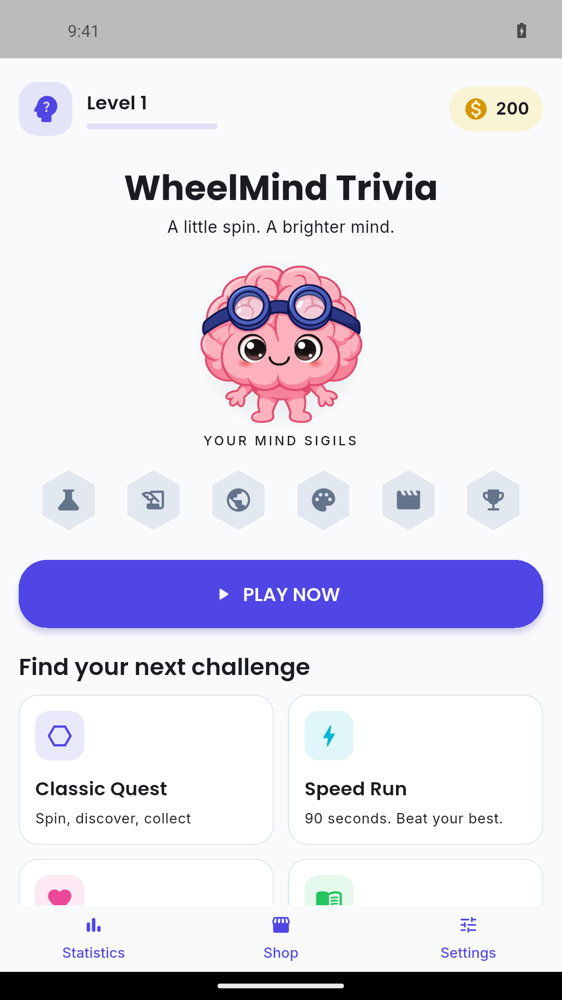
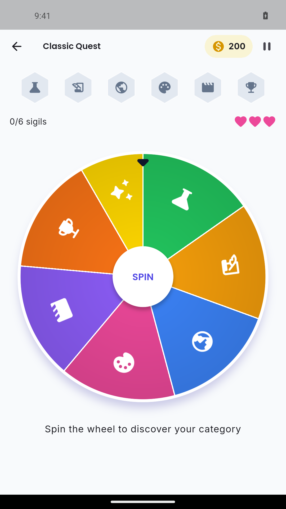
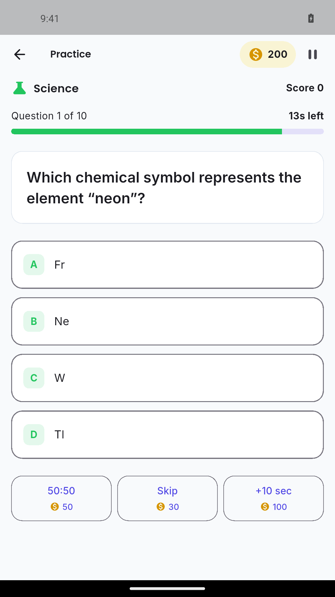

PRAXIS SCIENCE LAB / ANDROID
WheelMind Trivia
Spin the wheel, collect sigils and explore six trivia categories offline.
In testing Not yet available on Google Play.
Spin the wheel and put your general knowledge to the test with Mindo, your cheerful trivia companion.
Explore six categories: Science, History, Geography, Arts, Entertainment and Sports. The question bank contains 1,000 question concepts, each available in English, Romanian and Spanish — 3,000 language versions in total.
Choose your challenge: • Classic: spin the wheel and collect category sigils. • Speed: answer as many questions as you can in 90 seconds. • Survival: start with 15 seconds; correct answers add 4 seconds and wrong answers subtract 5. • Practice: choose a category and play a round of 10 questions. • Daily: take a five-question challenge once a day.
Earn in-game coins, use helpful power-ups and follow your progress in local statistics. Switch between light and dark themes, adjust sound and vibration, and choose reduced motion in Settings.
Questions and core gameplay work offline. No account is required. Progress is saved on your device, without cloud synchronization.
Developed by Traian Anghel. Published by Praxis Science Lab.
Inside the app
Actual screenshots from version 1.0.0 (1).



Language
English, Romanian and Spanish
Using the app
A general-knowledge game for entertainment and learning. Questions can contain errors; contact support with the language and question text to report a correction. No age rating or store approval is claimed here.
Praxis Science Lab is the publishing brand used by Traian Anghel. For support or privacy questions, email traiananghel@gmail.com. Include the app name and version. Do not send passwords, medical records, private recordings or other sensitive information.